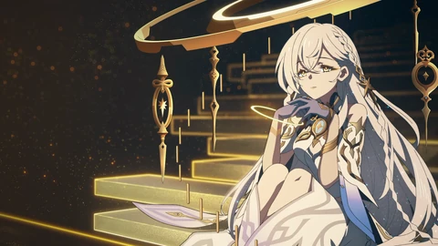

Teyvat & Unknown · Gods & Divinity
Istaroth
Istaroth, also called Tokoyo Ookami and the Thousand Winds, is the Ruler of Time. Recent quests connect her to the Four Shades and the Seeker order.

Names, titles, and the Four Shades
Enkanomiya’s records call Istaroth Tokoyo Ookami, while Mondstadt’s older traditions use the name Thousand Winds. In modern dialogue, Alice calls her the Ruler of Time, and the older Enkanomiya chronicle places her among the Shades who served the Primordial One.
These titles come from different people and periods. They establish that Istaroth is associated with time and has a place in the story of the Four Shades, but they do not amount to a complete biography or explain her present whereabouts.
Enkanomiya’s record of Tokoyo Ookami
Before Sun and Moon is an Enkanomiyan chronicle written after the people’s return to the surface. It describes the time before the Sun and Moon and names Istaroth as Tokoyo Ookami. The book is a surviving local account, not an omniscient narration of the world’s earliest history.
Enkanomiya’s record is important because it preserves a name and religious tradition largely absent from present-day public knowledge. The text’s account of the Primordial One and the Shades should still be read as the scribe’s history, with its own gaps and limits.
The Thousand Winds and Mondstadt
The Thousand Winds Temple and Mondstadt’s phrases about the winds of time are often considered alongside the name Istaroth. The Time and Wind world quest explores an abandoned sundial and a hidden remnant on the island northeast of Mondstadt.
That quest does not identify the force behind every event as Istaroth by name. The connection is supported by the shared time-and-wind language, but specific claims about what she did there remain interpretation unless the game states them directly.
A meeting across five hundred years
In A Space and Time for You, a key from the Traveler’s spacecraft links the present-day Traveler with Direidyth, a Khaenri’ahn from five hundred years earlier. The quest describes their encounter as an intersection in memory and shows time and space around Direidyth stop when the Traveler chooses what to do with the key.
Afterward, the Traveler’s sibling says Istaroth must have had a hand in making the meeting possible and recognizes the outcome from their own past. Istaroth is not shown or heard in the scene, so the sibling’s explanation identifies the likely agent without revealing how she arranged it.
Istaroth and the Seekers in Version 7.2
Hour of Ruin adds a direct statement about Istaroth’s current influence. Alice describes the Seekers’ duty to maintain the world’s border and explore life and knowledge in the universe, then says their supporter Istaroth expressly forbade them from intervening in the conflict between Snezhnaya and the Heavenly Principles.
Alice also calls herself Istaroth’s helper. This is Alice’s explanation of her own role and the order’s limits; the quest does not show Istaroth giving the instruction or explain how long it has been in force.
What the current record establishes
Across Enkanomiya’s chronicle and later Archon Quests, Istaroth is named as Tokoyo Ookami, the Thousand Winds, and the Ruler of Time. She is counted among the Four Shades, is credited by the Traveler’s sibling with enabling a meeting across time, and is named by Alice as the authority restricting the Seekers’ involvement in the current conflict.
These references establish a wider role than the early fragments alone suggested. They still do not confirm every theory about Istaroth’s actions, alliances, or power over time.
Questions the game has not answered
The quests do not explain where Istaroth is, why she restricts the Seekers, or the full limits of her authority. They also leave the mechanics of the Traveler–Direidyth meeting unresolved beyond the key, the temporal crossing, and the sibling’s attribution.
Time-related imagery, an unusual coincidence, or a reference to wind is not by itself proof that Istaroth caused an event. This guide marks her stated titles and the attributed actions separately from interpretations about her wider plans.
This is an original CoreGG reading guide, not an official HoYoverse article or a reproduction of the game text. Source links below identify the records used so you can check the original context.
Sources & references
Check these sources for the original game text and reference trail.